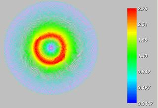
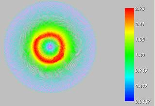

| Scale: 0.07 Density: 50% | Scale: 0.07 Density: 100% |
 |
 |
| Scale: 0.3 Density: 50% | Scale: 0.3 Density: 100% |
 |
 |
The MaxFEM Electrostatics 2D application numerically solves electrostatics bidimensional problems in Cartesian coordinates. You can find extensive information about the electrostatics mathematical model in the MaxFEM Models user guide.
MaxFEM allows to consider linear dielectric materials or conducting media as well as different kinds of charge densities. The admissible options both in the 2D and 3D cases are summarized in the tables below.
| Material properties (ε) | 2D | 3D |
| Linear and isotropic | Yes | Yes |
| Linear and orthotropic | Yes | Yes |
| Admisible charges | Cartesian 2D | Cartesian 3D |
| Point charges | -- | Yes |
| Linear charges | Yes | Yes |
| Surface charges | Yes | Yes |
| Volumetric charges | Yes | Yes |
It is important to note that the nomenclature for the 2D case comes from the source applied in the 3D case. For instance, the term “line charge” in 2D refers to a point source in 2D which comes from a line charge in 3D.
For the numerical approximation of electrostatics problems, MaxFEM uses Lagrange finite elements of order one to compute the electric potential V. Thus the electric field is approximated by piecewise functions in each element of the mesh (triangles in 2D and tetrahedra in 3D).
To use the electrostatic application the user needs:
To provide a finite element mesh of the domain: menu Mesh.
To impose the boundary conditions on the boundaries: menu Boundary Conditions.
To assign materials to the different components of the domain: menu Properties. Materials must be previously selected and/or defined in the Materials database.
To assign source properties: menu Sources.
To solve the problem in direct or remote mode: menu Solver/Run or Solver/Run remote, respectively. The user can stop the computation before it is completed in the label Solver/Stop.
Once the problem has been solved, various quantities and fields based on the potential can be computed. It is also possible to create displays of the results: menu Visualization.
All the previous steps are described in the items below.
MaxFEM does not include a mesh generator tool so the user must provide its own meshes. In the electrostatic application, mesh files can be in unv or mfm format (see section MaxFEM mesh files for a complete description of the mesh formats). In the electrostatic application, MaxFEM allows P1 Lagrange triangular finite elements for 2D problems and P1 Lagrange tetrahedral finite elements in the 3D case. Mesh may be loaded from the Mesh menu by choosing
Mesh → Open → Choose mesh file → meshfile
In the menu Properties the user can assign a material to the different parts of the computational domain.
First, you must select the number assigned to the surface reference in the mesh (1, for instance)
Properties → Materials → Choose surface references → 1
Then, you select the material (copper, for instance)
Properties → Materials → Choose material → copper
Boundary conditions is a menu entry to define boundary or interface conditions and attach them to boundaries. Electrostatics application considers two types of boundary conditions.
In this case, the value VD of the electrostatic potential on boundary ∂ΩD must be given. To do that, you need:
Define the boundary condition (for instance, blocking_1)
Boundary conditions → Dirichlet: electrostatic potential, V (V) → blocking_1 → Add
Define the boundary condition via a constant or a precompiled function
Dirichlet conditions: blocking_1
The condition is given by: A constant or a function
Assign the boundary condition to the corresponding boundary reference(s). For instance:
The condition is given by → A constant → Line references → 1 2 4
If VD takes a constant value, define this value:
The condition is given by: A constant → Constant value → 0.10
If VD is a precompiled function, select “Function defined by user”:
The condition is given by: A function → Function name → Function defined by user
In this case, the user must edit the file modulos_electros.f90 of the folder $INSTALLDIR/sources/electrostatics2d/ of the installing directory and define its own function in the line 419 of the module bloqueo, just after the sentences
! Dirichlet Boundary Condition defined as a function by User
! Please modify the code below in case you want to provide
! your own function to compute Dirichlet boundary condition
if (trim(adjustl(DirBC_Func)) == 'User_Defined') then
Then, you must recompilate the solver before running it.
In this case, the value -D·n of the surface charge density across the boundary ∂ΩN must be given. To do that, you need to follow the same steps as for the Dirichlet conditions but selecting
Boundary conditions → Neumann: electric field normal component
In this case, the user must edit the file modulos_electros.f90 of the folder $INSTALLDIR/sources/electrostatics2d/ of the installing directory and define its own function after line 478, just after the sentences
! Neumann Boundary Condition defined as a function by User
! Please modify the code below in case you want to provide your own
! function to compute Neumann boundary condition
if (trim(adjustl(NeuBC_Func)) == 'User_Defined')
In the electrostatic 2D application, sources can be:
To impose a charge density, you must perform the following steps depending on the type of charge.
Choose the type of charge density in the Sources item of the application.
Sources → Line charge density, ρl (C/m)
Then, define a new charge and press the button Add of the dialog box.
Line sources: source _1 → Add
Press the name source _1 you have just created. Then a new dialog box appears where you must introduce the coordinates of the point(s) where the charge is imposed and its value(s). Notice that you can introduce an array of points where you can define the corresponding charge value.
Choose the type of charge density in the Sources item of the application.
Sources → Surface charge density, ρs (C/m2)
Then, define a new charge and press the button Add of the dialog box.
Line sources: source _1 → Add
Press the name source _1 you have just created. Then a new dialog box appears where you must introduce the references of the line(s) where the charge is imposed and its value. This value can be a constant or a function.
Choose the type of charge density in the Sources item of the application.
Sources → Volumetric charge density, ρv (C/m3)
Then, define a new charge and press the button Add of the dialog box.
Volumetric sources: source _1 → Add
Press the name source _1 you have just created. Then a new dialog box appears where you must introduce the references of the surfaces(s) where the charge is imposed and its value. This value can be a constant or a function.
If a physical quantity describing a material is temperature dependent, the user must select this option in the item Data of the menu bar:
Data → Temperature field for materials T (ºC)
A dialog box appear where the file name which contains the temperature and the values of the property as a function of those of the temperature must be added
Choose temperature field: Temperature.vtu
The field must be written in mff or vtu format and contain a value for each of the degrees of freedom of the mesh.
From the resolution of the electrostatic problem, appropriate derived quantities can be computed. The post-processing quantities available in the MaxFEM electrostatic application are summarized in the tables below.
| Symbol | Magnitude | Type | Unit |
| V | Electrostatic potential | S | V |
| E | Electric field intensity | V | V/m |
| T | Temperature field | S | ºC |
Electrostatic application postprocessing quantities
S: Scalar quantity, V: vectorial quantity
MaxFEM provides a set tools for post-processing and visualization which are available through the item Visualization of the menu bar. The options and their characteristics are summarized in the table below.
| Item | Visualization options | Description |
Mesh |
Triangulation | Represents the mesh of the domain |
| Surface references | Displays subdomains reference number | |
| Line references | Displays lines reference number | |
| Point references | Displays points reference number | |
| Element numbering | Displays elements reference number | |
| Vertex numbering | Displays the number of a vertex previously chosen with the mouse. | |
| Materials | Displays the name of the material assigned to a subdomain | |
Temperature field T, |
Filled | Displays the field distribution on the domain |
| Threshold | Extracts the cells that fall between a given lower and upper thresholds of the field. | |
| Isolines | Displays the curves along which the field has a constant value. A set of scalar values can be specified to extract more than one isoline at a time. | |
| 3D plot | Displays a three-dimensional plot of the field over the domain. | |
| Plot over line | Cuts a 3D data object with a plane. An interactive widget can be used for placing the plane in the appropriated place. | |
Electric field E |
Vectors | Displays the vector field E |
| Vectors components | Displays each of the components of the vector field E | |
| Close all | --- | Closes all the windows containing the visualization results. |
The user can modify the size of the arrows by using the parameter Scale in the dialog box, for instance at 0.07
Electric field → Vectors → Choose options for arrows → Scale → Select the scale for arrows → 0.07
It is also possible to modify the number of vectors in the plot by using the parameter Density in the dialog box, for instance at 50%:
Electric field → Vectors → Choose options for arrows → Density → Select the density for arrows (%) → 50
| Scale: 0.07 Density: 50% | Scale: 0.07 Density: 100% |
|
 |
| Scale: 0.3 Density: 50% | Scale: 0.3 Density: 100% |
|
|
The goal of this section is to familiarize the user with the MaxFEM electrostatics 2D application by means of simple examples. These examples contain the general steps and all the data needed to describe the physics and to solve the given cases.
To reproduce exactly the examples, keep all the options in the different menus at the default settings. It is important to note that in the cases where the analytical solution is provided, this solution corresponding with the default settings; the one corresponding with other options the user may have changed is not necessarily the same.
Remember that before start to work with a particular application, the user must choose a working directory. This directory will be used to store the files associated with the application. In particular, when a sample data is selected, the interface will automatically make a copy of the files associated with that sample in the working directory.
For the electrostatic 2D application, the following examples are available:
Johnk, C. Engineering electromagnetic fields and waves. Wiley & Sons. 1988
Popovic, B. Introductrory Engineering Electromagnetics. Addison Wesley. 1971
Statement of the problem
In this example, the electrostatic potential V generated in the XY plane by a uniformly charged line lying along the z axis is computed. The line charge density is denoted by ρl (C/m). Let P0 = (x0,y0) be a reference point where the potential has been fixed to be equal to zero. Then, the analytical expression for the potential in a point of coordinates (x,y) with respect to the point P0 is given by (see[1]).
where ε0 denotes the vacuum electric permittivity. The reference point P0 is arbitrary and the potential energy at this reference point is taken to be equal to zero. In this example, for simplicity, is any point having norm equal to one.
The equipotencial surfaces are cylinders with axis the z axis; as a consequence, the potential distribution is the same in each transversal plane to the z axis. The equipotential surfaces are always perpendicular to the net electric field lines passing through it. As a consequence, the electric field E is radial; its modulus in a point (x,y) takes the value
For the numerical resolution, a circle of center (0,0) and radius 2 is considered as computational domain. Thus, the line charge density in the 3D problem corresponds to a point charge density in 2D. The relative permittivity is considered to be constant and equal to 1. The line charge density is ρl= 1.e-10 C/m.
Resolution procedure
Once MaxFEM is open, the user must select the application Electrostatic2D from the Project of the menu bar.
Project → Applications → Electrostatic2D
Remember that before start to work with a particular application, the user must choose a working directory.
Then, from the item Project of the Menu bar, select
Project → Sample Data → Example 1: Line source
The computational domain is a circle of center (0,0) and radius 2. The user must upload the mesh malla_ej1.mfm from the Mesh item of the menu bar.
Mesh → Open → Choose mesh file → malla_ej1.mfm
The user can display the mesh of the computational domain by choosing the option Visualization → Mesh of the Menu bar. If not, the computational domain will be displayed when selecting any item from the menu bar.
Figure 1: Computational domain.
After we have the mesh, we start to go through the menu bar from the left to right and we choose the different options related to the whole simulation.
The material considered in this example is the so-called Test material 1 and their properties have been previously defined in the materials database of the interface. To assign these materials to the computational domain, the user must:
Select the item Properties → Materials of the Menu bar.
In the Choose surface references dialog box, select the reference 1.
The dialog box Choose material appears; by default, the material named Test material 1 associated to the reference 1 is displayed.
The user can display the different properties of this material in Materials database item of the menu bar. To do that,
Select the option Materials database → Open
A dialog box appears where the different materials are displayed. Select Test material 1.
A new dialog box appears where the different electromagnetic magnitudes are displayed. Click on the property of your interest, for instance, Relative permittivity.
Choose A temperature dependant table in the box below and then Isotropic in the Behavior box.
Click on Temperatures or Values to display the different values of the temperature and the corresponding relative electric permittivity.
Now we are going to impose the boundary conditions. A Dirichlet boundary condition computed from the analytical solution is considered; thus, the default value -1.2459655 corresponds to the potential in the boundary of the circle. To impose this boundary condition the user must:
Select the option Boundary conditions → Dirichlet: electric scalar potential in the menu bar.
Click on Condition 1 on the Dirichlet conditions dialog box.
In the dialog box The condition is given by, select the option A constant
Click on Line reference. By default, number 2 associated to this reference is displayed in the box below. Click on 2 to display the reference in the visualization window.
Click on Constant value. By default, in the dialog box Constant value below the value -1.2459655 appears.
Click on the item Sources of the Menu bar to continue with the resolution procedure.
To define the source of the problem, select the option Sources → Line charge density, ρl (C/m) in the menu bar. A dialog box appears where the user can select/define line charge density options. In this example, the default option Source 1 is displayed. Remember that the term “line charge” in 2D refers to a point source in 2D which comes from a line charge in 3D. So now we need to specify the coordinates of this point and the value of the charge density. To do that, the user must:
Click on Source 1. A dialog box is displayed below.
Click on X coordinates and then on Y coordinates to display the coordinates of the point where the point source is considered. In this example, the point (0,0) is considered.
Click on Values to display/define the value of the charge density. In this example, the default value is 1.e-10 (in C/m).
The item Data of the menu bar allows to introduce different data depending on the application. In electrostatics, the option allows to introduce data depending on temperature. In particular, the relative electric permittivity. In this example, and with the only goal to illustrate this fact, a file named teta.mff has been included. In this file, the relative electric permittivity has been defined equal to 1 for different values of the temperature in order to agree with the computed analytical solution. To upload this file the user must
Select Data → Temperature field for materials in the menu bar.
The dialog box Choose temperature field appears. By default, the file teta.mff is displayed and automatically loaded. In the general case, you must click on the explore directory button and select the corresponding file.
Select the item Run (or run remote depending on your preference) of the menu bar to proceed with the resolution of the problem.
Select the item Visualization of the menu bar to display the results.
Click on the option Potential to display the potential. A dialog box appears where the user can choose the field representation.
Choose the option Filled to display the potential in the domain.
Visualization → Potential → Filled

Figure 2: Electric potential.
Choose the option 3D Plot to display a 3D representation of the potential over the computational domain.
Figure 3: 3D representation of the potential.
Choose the option Plot over line to display both the isosurfaces and the potential along a cut plane with the 3D domain.
Figure 4: Plot over line representation of the potential.
To display the electric field, choose the option Visualization → Electric field of the menu bar. Select the option Vectors of the dialog box and then state the values for the scale and density of the arrows on the boxes below. For this picture, the scale is 0.01 and the density is 100.
Figure 5: Electric field.
A zoom of the field can be done by using the middle buttom of the mouse.

Figure 6: Zoom of the electric field representation.
Select the option Vector components to represent each of the components of the electric field or its modulus. Notice that in the visualization window the user can adjust the scale range.

Figure 7: First component of the electric field.
Statement of the problem
In this example we consider an infinite cylinder of radius R with an uniform surface charge density ρS= e-10 C/m2. By symmetry, the electric field E - and therefore the electric potential V - is a function only of the normal distance to the cylinder axis (the z-axis). Assuming the relative permittivity of the material(s) composing the domain is equal to 1, the analytic solution for the electrostatic potential relative to a reference point P0 outside the cylinder is given by (see [2]).
where ε0 denotes the vacuum electric permittivity. The reference point P0 is arbitrary and the potential energy at this reference point is taken to be equal to zero. For simplicity, P0 is any point of norm 1.
The modulus of the electric field E is given by
For the numerical resolution of the problem, we consider a circle of center (0,0) and radius 4 containing a circle of center (0,0) and radius 0.5 composed by a different material. A uniform line charge density on the boundary of the inner circle is considered. Notice this line charge density corresponds to a surface charge density in the 3D problem. A Dirichlet boundary condition is considered in the boundary of the circle of radius 4. Two different materials have been considered: Test material 2 for the inner circle and Test material 3 for the annulus between the two circumferences. Both of them have relative permittivity equal to 1.
Resolution procedure
Once MaxFEM is open, the user must select the application Electrostatic2D from the Project of the menu bar.
Project → Applications→ Electrostatic2D
Remember that before start to work with a particular application, the user must choose a working directory.
Then, from the item Project of the Menu bar, select
Project → Sample Data→ Example 2: Surface source
The computational domain is a circle of center (0,0) and radius 2. The user must upload the mesh malla_ej2.mfm from the Mesh item of the menu bar.
Mesh → Open → Choose mesh file → malla_ej2.mfm
The user can display the mesh of the computational domain by choosing the option Visualization → Mesh of the Menu bar. If not, the computational domain will be displayed when selecting any item from the menu bar.
After we have the mesh, we start to go through the menu bar from the left to right and we choose the different options related to the whole simulation.
The material considered in this example is the so-called Test material 2 and Test material 3 for the inner and outer circles, respectively. Their properties have been previously defined in the materials database of the interface. To assign these materials to the computational domain, the user must:
Select the item Properties → Materials of the Menu bar.
In the Choose surface references dialog box, select the reference 1.
The dialog box Choose material appears; by default, the material named Test material 2 associated to this reference domain is displayed. If not, the user must choose it. The domain is colored in blue in the visualization window.
In the Choose surface references dialog box, select the reference 2, click on the Choose material dialog box and select Test material 3.
Figure 1: Domains corresponding to Test Material 2 (left) and 3 (right).
The user can display the different properties of this material in Materials database item of the menu bar.
Now we are going to impose the boundary conditions. A Dirichlet boundary condition computed form the analytical solution is considered in the boundary of the exterior circle and it is introduced as a function. To impose this boundary condition the user must:
Select the option Boundary conditions → Dirichlet: electric scalar potential in the menu bar.
Click on Condition 1 on the Dirichlet conditions dialog box.
In the dialog box The condition is given by, select the option A function
Click on Line reference. By default, number 1 2 5 and 8 associated to the different parts of this boundary must be stand out in the in the box below. If not, click on each number to identify each reference in the visualization window and select the appropriate ones.
Click on each number to identify the reference in the visualization window.
Click on Function name and assign Example_2 in the box below.
Click on the item Sources of the Menu bar to continue with the resolution procedure.

Figure 2: Line reference 1.
To define the source of the problem, select the option Sources → Surface charge density, ρS (C/m2) in the menu bar. A dialog box appears where the user can select/define surface charge density options. In this example, the default option Source 1 is displayed. Remember that the term “surface charge density” in the menu refers to a line source in 2D which comes from a surface charge density in 3D. So now we need to specify the references of this line and the value of the surface charge density. To do that, the user must:
Click on Source 1. A dialog box is displayed below.
Click on Surface references a box appears below and the references where the charge is imposed must be selected by clicking on. In this example, by default they are already selected (and as a consequence highlighted in the dialog box).
Click on Constant value to display/define the value of the charge density. In this example, the constant value 1.e-10 C/m2 is considered.
Select the item Run (or run remote depending on your preference) of the menu bar to proceed with the resolution of the problem.
Select the item Visualization of the menu bar to display the results.
Click on the option Potential to display the potential. A dialog box appears where the user can choose the field representation. Choose the option Filled to display the potential in the domain.
Visualization → Potential → Filled

Figure 3: Electric potential.
Choose the option 3D Plot to display a 3D representation of the potential over the computational domain. Choose XZ view to display next Figure. You can use the mouse to move the image in the visualization window.
Figure 4: XZ view of the 3D plot.
Choose the option Plot over line to display both the isosurfaces and the potential along a cut plane with the 3D domain. Select iso view to display the line along with the potential is represented.
Figure 5: Plot over line representation of the potential.
To display the electric field, choose the option Visualization → Electric field of the menu bar. Select the option Vectors of the dialog box and then state the values for the scale and density of the arrows on the boxes below. For this picture, the scale and density are 0.02 and 100 respectively. Select None to display only the arrows and not the domain neither the mesh. Select Vector components to display the components of the vector field E.
Figure 6: Electric field E.
Figure 7: First component of the electric field.

Figure 8: Second component of the electric field.
Statement of the problem
In this example we consider an infinite solid circular cylinder of radius R, uniformly charged with a volume charge density. As in example 2, by symmetry the electric field and the electric potential only depend on the normal distance to the cylinder axis. Assuming the relative electric permittivity of the material(s) composing the domain is equal to 1, the analytic solution for the electrostatic potential relative to a reference point P0 = (x0,y0) located outside the cylinder is (see [2]):

where ρv is the volumetric charge density and εo is the vacuum electric permittivity. For simplicity, P0 is any point of norm 1.
The analytic solution for the electrostatic field intensity is:
As computational domain we consider a circle of center (0,0) and radius 2 with a homogeneous Dirichlet condition on its boundary. Two different materials, named Test material 2 and Test material 3 have been considered in different parts of the computational domain, both of them having relative permittivity equal to 1.
Resolution procedure
Once MaxFEM is open, the user must select the application Electrostatic2D from the Project of the menu bar.
Project → Applications→ Electrostatic2D
Remember that before start to work with a particular application, the user must choose a working directory.
Then, from the item Project of the Menu bar, select
Project → Sample Data→ Example 3: Volume source
The computational domain is a circle of center (0,0) and radius 2. The user must upload the mesh malla_ej3.mfm from the Mesh item of the menu bar .
Mesh → Open → Choose mesh file → malla_ej3.mfm
The user can display the mesh of the computational domain by choosing the option Visualization → Mesh of the Menu bar. If not, the computational domain will be displayed when selecting any item from the menu bar.
After we have the mesh, we start to go through the menu bar from the left to right and we choose the different options related to the whole simulation.
To assign the different materials to the computational domain, the user must:
Select the item Properties → Materials of the Menu bar.
In the Choose surface references dialog box, select the reference 1.
The dialog box Choose material appears; by default, the material named Test material 2 associated to this reference domain is displayed. If not, the user must choose it. The domain is colored in blue in the visualization window.
In the Choose surface references dialog box, select the reference 2, click on the Choose material dialog box and select Test material 3.
The user can display the different properties of this material in Materials database item of the menu bar.
Now we are going to impose the boundary conditions. A homogenous Dirichlet boundary condition computed form the analytical solution is considered in the boundary of the domain. To impose this boundary condition the user must:
Select the option Boundary conditions → Dirichlet: electric scalar potential in the menu bar.
Click on Condition 1 on the Dirichlet conditions dialog box.
In the dialog box The condition is given by, select the option A constant
Click on Line reference. By default, number 1 2 5 and 8 associated to the different parts of this boundary must be stand out in the in the box below. If not, click on each number to identify each reference in the visualization window and select the appropriate ones.
Click on Constant value and type 0 in the box below.
Click on the item Sources of the Menu bar to continue with the resolution procedure.
To define the source of the problem, select the option Sources → Volumetric charge density, ρS (C/m3) in the menu bar. A dialog box appears where the user can select/define surface charge density options. In this example, the default option Source 1 is displayed. Remember that the term “volumetric charge density” in the menu refers to a surface source in 2D which comes from a volumetric charge density in 3D. So now we need to specify the references of this surface and the value of the volumetric charge density. To do that, the user must:
Click on Source 1. A dialog box is displayed below.
Click on Surface references a box appears below and the references where the charge is imposed must be selected by clicking on. In this example, by default they are already selected (and as a consequence highlighted in the dialog box).
Click on Constant value to display/define the value of the charge density. In this example, the constant value 1.e-10 C/m3 is considered.
Select the item Run (or run remote depending on your preference) of the menu bar to proceed with the resolution of the problem.
Select the item Visualization of the menu bar to display the results. For instance,
Click on the option Potential → Threshold to display the potential to display the potential between upper and lower limits.

Figure 1: Potential between 0.8 (lower limit) and 2 (upper limit).
Click on Isolines and type 10 in the box below to display 10 potential contour lines.
Figure 2: Contour lines for the potential V.
Click on Isolines, choose Contours at in the box below and type -1 0.3 0.5 1 to display the contour lines corresponding with those values.
Figure 3: Potential contour lines at values -1, 0.3, 0.5 and 1.
Choose the option Plot over line to display both the isosurfaces and the potential along a cut plane with the 3D domain. Select iso view to display the line along with the potential is represented.
Figure 4: Plot over line representation of the potential.
Choose the option 3D Plot , Scale in the Z axis 1 and then Outline to display the figure below.
Figure 5: 3D representation of the potential V.
Choose the option Visualization → Electric field of the menu bar. Select the option Vector components and then Modulus of box below to display the modulus of the electric field. Select Vector components and then First component or Second component to display the components of the vector field E.
Figure 6: Modulus of the vector field E.
Figure 7: First component of the electric field.

Figure 8: Second component of the electric field.
Statement of the problem
In this example two elliptical infinite hollow cylinders have potential of opposite sign, +1 and -1, respectively. The electric potential distribution due to this potential drop will be computed.
The electric field and the electric potential are the same in any plane transversal to the axis of the cylinders. Then, as computational domain we consider the XY plane. For the numerical resolution, we consider an artificial boundary, a circumference of center (0,0) and radius 5, enclosing the two ellipses and place far enough to consider that the potential in this boundary is equal to 0.
Resolution procedure
Once MaxFEM is open, the user must select the application Electrostatic2D from the Project of the menu bar.
Project → Applications→ Electrostatic2D
Remember that before start to work with a particular application, the user must choose a working directory.
Then, from the item Project of the Menu bar, select
Project → Sample Data→ Example 4: Potential
The computational domain is a circle of center (0,0) and radius 2. The user must upload the mesh malla_ej4.mfm from the Mesh item of the menu bar.
Mesh → open → Choose mesh file → malla_ej4.mfm
The user can display the mesh of the computational domain by choosing the option Visualization → Mesh of the Menu bar. If not, the computational domain will be displayed when selecting any item from the menu bar.
After we have the mesh, we start to go through the menu bar from the left to right and we choose the different options related to the whole simulation.
To assign the different materials to the computational domain, the user must:
Select the item Properties → Materials of the Menu bar.
In the Choose surface references dialog box, select the reference 1.
The dialog box Choose material appears; by default, the material named Test material 1 associated to this reference domain is displayed. If not, the user must choose it. The domain is colored in blue in the visualization window.
The user can display the different properties of this material in Materials database item of the menu bar.
Now we are going to impose the boundary conditions. Three different Dirichlet boundary conditions are considered: a homogenous boundary condition in the outer boundary; potential V=-1 on the left ellipse and V=1 on the right one. To impose this boundary conditions the user must:
Select the option Boundary conditions → Dirichlet: electric scalar potential in the menu bar.
Click on Condition 1 on the Dirichlet conditions dialog box.
In the dialog box The condition is given by, select the option A constant
Click on Line reference. By default, number 1 2 7 and 8 associated to the different parts of this boundary must be stand out in the in the box below. If not, click on each number to identify each reference in the visualization window and select the appropriate ones.
Click on Constant value and type 0 in the box below.
Click on Condition 2 on the Dirichlet conditions dialog box.
In the dialog box The condition is given by, select the option A constant
Click on Line reference. By default, number 3 4 5 and 6 associated to the different parts of this boundary must be stand out in the in the box below. If not, click on each number to identify each reference in the visualization window and select the appropriate ones.
Click on Constant value and type 1 in the box below.
Click on Condition 3 on the Dirichlet conditions dialog box.
In the dialog box The condition is given by, select the option A constant
Click on Line reference. By default, number 9 10 11 and 12 associated to the different parts of this boundary must be stand out in the in the box below. If not, click on each number to identify each reference in the visualization window and select the appropriate ones.
Click on Constant value and type -1 in the box below.
Click on the item Sources of the Menu bar to continue with the resolution procedure.
In this example no sources have been considered.
Select the item Run (or run remote depending on your preference) of the menu bar to proceed with the resolution of the problem.
Select the item Visualization of the menu bar to display the results. For instance,
Select Mesh → Triangulation to display the mesh of the computational domain.

Figure 1: Mesh of the computational domain.
Choose the option Plot over line to display both the isosurfaces and the potential along a cut plane with the 3D domain. Select iso view to display the line along with the potential is represented. You can move the first and second points defining this line by selecting them with the mouse.
Figure 2: Plot over line representation of the potential.
Choose the option 3D Plot , Scale in the Z axis 3 to display the figure below.
Figure 3: 3D representation of the potential V.
Choose the option Visualization → Electric field of the menu bar. Select the option Vector components and then Modulus in the box below to display the modulus of the electric field.
Figure 6: Modulus of the vector field E.
Select the option Vector to display the vector electric field.
Figure 7: Electric field E (scale 0.5, density 100%).